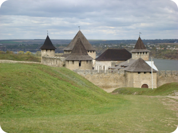

Хотинська фортеця
Хотинська фортеця – свідок численних війн та баталій. Протягом століть вона була центром розвитку ремесел і торгівлі, культури та економіки. Ця середньовічна красуня може багато розповісти тому, хто побажає вислухати її…
Не випадково скелястий мис над Дністром наші предки називали «Хотінь». Назва міста походить від дієслова «хотіти», оскільки мис був бажаним та надійним місцем для давніх поселенців. Завдяки міцній твердині та вигідному розташуванню Хотин став центром розвитку ремесел і торгівлі, які, своєю чергою, сприяли розквіту його культури та економіки. Місто було важливим пунктом у європейсько-азійській торгівлі.

Розташований на основних транспортних магістралях, Хотин завжди привертав увагу завойовників. З метою захисту від них була споруджена фортеця, яка пережила століття і бачила під своїми мурами полчища воїнів Османської імперії, повстанців Мухи, народних месників Дитинки, вояків Дмитра Вишневецького (Байди), Петра Дорошенка.
Під час Визвольної війни українського народу проти польської шляхти у Хотин двічі вступали війська Богдана Хмельницького.
 Відома Хотинська фортеця і подіями Хотинської війни, яка проходила під стінами фортеці у вересні – на початку жовтня 1621 р. Ця війна прославила запорозьких козаків та їхнього гетьмана Петра Конашевича-Сагайдачного і стала переломним моментом в історії Османської імперії. Перемога під Хотином врятувала Західну Європу від вторгнення яничар, справила сильне враження на всі народи і набула відголосу у світовій літературі.
Упродовж XVII ст. Хотин переходив з рук до рук, ним володіли і польські королі, і турецькі феодали, не раз місто визволяли запорозькі козаки. Під час Визвольної війни у Хотині перебували війська Богдана Хмельницького (1650–1653 рр.). Тільки на початку XVIII ст. туркам вдалося остаточно закріпитися в Хотині і в фортеці. Після реконструкції 1712–1718 рр. (за участю французьких інженерів) вона стала наймогутнішим вузлом османської оборони на сході Європи. І хоча в ХVIII–ХІХ ст. фортеця поступово втрачає своє оборонне значення, та під її мурами продовжували кипіти битви.
Відома Хотинська фортеця і подіями Хотинської війни, яка проходила під стінами фортеці у вересні – на початку жовтня 1621 р. Ця війна прославила запорозьких козаків та їхнього гетьмана Петра Конашевича-Сагайдачного і стала переломним моментом в історії Османської імперії. Перемога під Хотином врятувала Західну Європу від вторгнення яничар, справила сильне враження на всі народи і набула відголосу у світовій літературі.
Упродовж XVII ст. Хотин переходив з рук до рук, ним володіли і польські королі, і турецькі феодали, не раз місто визволяли запорозькі козаки. Під час Визвольної війни у Хотині перебували війська Богдана Хмельницького (1650–1653 рр.). Тільки на початку XVIII ст. туркам вдалося остаточно закріпитися в Хотині і в фортеці. Після реконструкції 1712–1718 рр. (за участю французьких інженерів) вона стала наймогутнішим вузлом османської оборони на сході Європи. І хоча в ХVIII–ХІХ ст. фортеця поступово втрачає своє оборонне значення, та під її мурами продовжували кипіти битви.
 У 1826 р. місту Хотину був наданий герб: в золотому полі срібна фортеця з трьома баштами; на двох крайніх вміщено по бунчуку, а на середній – півмісяць на держаку; над ним хрест:навхрест – дві шаблі лезами вниз, над ними – срібний хрест на ознаку взяття Турецької фортеці.
У Хотинській фортеці проводилися зйомки багатьох художніх фільмів, серед яких «Гадюка», «Захар Беркут», «Балада про доблесного лицаря Айвенго», «Три мушкетери», «Стріли Робін Гуда». Серед недавніх – екранізація твору відомого українського письменника Юрія Мушкетика «Яса» та зйомки кінострічки «Запорозька Січ» за повістю Миколи Гоголя «Тарас Бульба».
У 1826 р. місту Хотину був наданий герб: в золотому полі срібна фортеця з трьома баштами; на двох крайніх вміщено по бунчуку, а на середній – півмісяць на держаку; над ним хрест:навхрест – дві шаблі лезами вниз, над ними – срібний хрест на ознаку взяття Турецької фортеці.
У Хотинській фортеці проводилися зйомки багатьох художніх фільмів, серед яких «Гадюка», «Захар Беркут», «Балада про доблесного лицаря Айвенго», «Три мушкетери», «Стріли Робін Гуда». Серед недавніх – екранізація твору відомого українського письменника Юрія Мушкетика «Яса» та зйомки кінострічки «Запорозька Січ» за повістю Миколи Гоголя «Тарас Бульба».